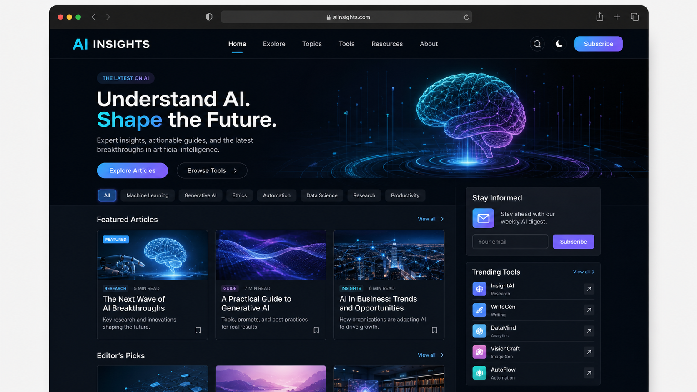

Codex
Agente de desenvolvimento que lê projeto, edita arquivos, valida no navegador e opera em ciclos.
A arXiv AI recent publicou uma atualização relevante sobre pesquisa. O tema merece atenção por seu possível impacto em estratégia, produto, operação ou adoção de inteligência artificial.
A Google DeepMind Blog publicou uma atualização relevante sobre negócios. O tema merece atenção por seu possível impacto em estratégia, produto, operação ou adoção de inteligência artificial.
14:20 · 4 min ModelosA OpenAI News publicou uma atualização relevante sobre modelos. O tema merece atenção por seu possível impacto em estratégia, produto, operação ou adoção de inteligência artificial.
13:40 · 4 min NegóciosA Google AI Blog publicou uma atualização relevante sobre negócios. O tema merece atenção por seu possível impacto em estratégia, produto, operação ou adoção de inteligência artificial.
12:55 · 4 minAtualizações com leitura prática para negócios, produto e operação.
A arXiv AI recent publicou uma atualização relevante sobre pesquisa. O tema merece atenção por seu possível impacto em estratégia, produto, operação ou adoção de inteligência artificial.
14:50 · 4 min NegóciosA Google DeepMind Blog publicou uma atualização relevante sobre negócios. O tema merece atenção por seu possível impacto em estratégia, produto, operação ou adoção de inteligência artificial.
14:20 · 4 min ModelosA OpenAI News publicou uma atualização relevante sobre modelos. O tema merece atenção por seu possível impacto em estratégia, produto, operação ou adoção de inteligência artificial.
13:40 · 4 min NegóciosA Google AI Blog publicou uma atualização relevante sobre negócios. O tema merece atenção por seu possível impacto em estratégia, produto, operação ou adoção de inteligência artificial.
12:55 · 4 min NegóciosA OpenAI News publicou uma atualização relevante sobre negócios. O tema merece atenção por seu possível impacto em estratégia, produto, operação ou adoção de inteligência artificial.
11:30 · 4 min SegurançaA OpenAI News publicou uma atualização relevante sobre segurança. O tema merece atenção por seu possível impacto em estratégia, produto, operação ou adoção de inteligência artificial.
10:10 · 4 minLeituras para separar movimento real de ruído.
A Google AI Blog publicou uma atualização relevante sobre negócios. O tema merece atenção por seu possível impacto em estratégia, produto, operação ou adoção de inteligência artificial.
12:55 · 4 min NegóciosA OpenAI News publicou uma atualização relevante sobre negócios. O tema merece atenção por seu possível impacto em estratégia, produto, operação ou adoção de inteligência artificial.
11:30 · 4 min SegurançaA OpenAI News publicou uma atualização relevante sobre segurança. O tema merece atenção por seu possível impacto em estratégia, produto, operação ou adoção de inteligência artificial.
10:10 · 4 minProdutos, conceitos e stacks que merecem acompanhamento.
Agente de desenvolvimento que lê projeto, edita arquivos, valida no navegador e opera em ciclos.
Produto agentivo voltado a tarefas profissionais, documentos, planilhas, apps e fluxos longos.
Recurso de reflexão para entender padrões de uso, temas e delegação de tarefas com IA.
Camada de IA aplicada a leads, campanhas, atendimento e mensuração em ecossistemas Google.
Estratégia para escolher modelos por tarefa, reduzindo custo sem perder qualidade operacional.
Arquitetura para orquestrar agentes e ferramentas entre contas, permissões e ambientes diferentes.
O portal combina pesquisa em fontes confiáveis, análise editorial rigorosa e curadoria voltada para quem usa IA em negócios, criação, automação e produto.
